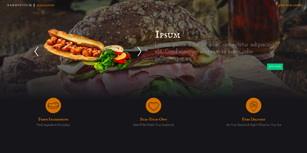
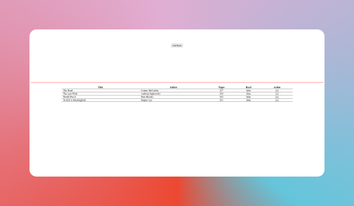

Featured Projects



I have prior working experiences related to the IT/ software development industry, such as
Database and ERP System Administrator, and a small amount of time as Java Developer Intern.
You can check my full working experiences here.
This website is intended to showcase my projects in Web Development, as well as to show recruiters my
skills as a Web Developer, which if found relevant to the specifications that have been looking for,
I would like to sit and have chat with you! here's the way you can reach me.
Anyway, I have feature three projects below complete with a live demo that you can check out.
And if you are interested to check out the rest of my projects, just click here. Thank you for visiting
my website, have a good day!

